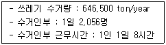
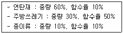
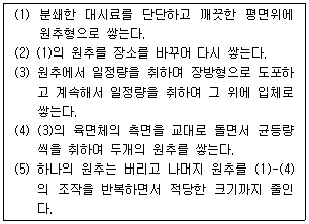
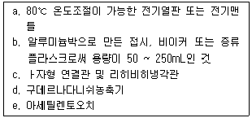

폐기물처리산업기사 (2003-08-31 기출문제)
1과목: 폐기물개론
1. 어느 도시의 인구가 60,000명이고 분뇨의 1인 1일당 발생량은 1.1ℓ 이다. 수거된 분뇨의 BOD 농도를 측정하였더니 25,000mg/ℓ 이었고, 분뇨의 수거율이 65％라고 할 때 수거된 분뇨의 1일 발생 BOD는?
- 652kg
- 1072kg
- 1650kg
- 2750kg
(정답률: 알수없음)

2. 어느 도시의 쓰레기 수거량등은 다음과 같다 1ton의 쓰레기를 수거 운반하는데 소요되는 시간(MHT)은? (단, 1년은 365일 기준)

- 8.5
- 8.7
- 9.3
- 9.8
(정답률: 알수없음)
3. 분뇨에 포함되어 있는 협잡물의 양과 질은 도시, 농촌, 공장지대 등 발생지역에 따라서 그 차가 크며, 우리나라의 경우는 평균 4~7% 정도라고 보고 있다. 이러한 우리나라 분뇨의 물리 화학적 성질로서 맞지 않는 것은?
- 외관상 황색-다갈색
- 점도는 비점도로 1.2~2.2 정도
- 비중은 1.02 정도
- 점성은 액체
(정답률: 알수없음)
4. 다음 중 폐기물을 분쇄하거나 파쇄하는 목적에 적합하지 않은 사항은?
- 겉보기 비중의 증가
- 유가물의 분리
- 비표면적의 감소
- 입경분포의 균일화
(정답률: 알수없음)
5. 쓰레기가 1일 4000m3이 배출되고 있다면 8톤 트럭으로 이 쓰레기를 운반하는데 1일 몇대의 트럭이 필요한가? (단, 대기차량은 4대를 포함, 쓰레기 밀도 650kg/m3, 트럭은 1일 1번 운행하며 기타조건은 무시함)
- 317
- 321
- 325
- 329
(정답률: 알수없음)
6. 수거노선을 설정할 때 유의할 사항 중 잘못된 것은?
- 가능한 한 간선도로 부근에서 시작하고 끝나도록 한다.
- 가능한 한 반시계방향으로 수거 노선을 정한다.
- 발생량이 많은 곳은 하루 중 가장 먼저 수거한다.
- 발생량이 적으나 수거빈도가 동일하기를 원하는 곳은 같은 날 왕복내에서 처리한다.
(정답률: 알수없음)
7. 자동화, 무공해화, 안전화 등의 장점은 있으나 장거리 수송이 곤란하거나 잘못 투입된 물건의 회수가 곤란하다는 점등 때문에 보다 많은 연구가 필요한 새로운 쓰레기수집ㆍ수송수단으로 가장 적절한 것은?
- Mono-rail 수송
- Conveyor 수송
- Container 철도 수송
- Pipe-line 수송
(정답률: 알수없음)
8. 국내 폐기물은 1990년대초와 1990년대말의 쓰레기 배출을 조사해보면, 초기의 연탄재에서 말기의 종이류로 질적인 변화가 뚜렷하다. 이에 대한 설명으로 옳지 않은 것은?
- 전체적인 배출량이 감소하였다.
- 발열량이 높아졌다.
- 쓰레기의 배출밀도가 커졌다.
- 재활용 가능성이 높아졌다.
(정답률: 알수없음)
9. 함수율이 35%인 쓰레기를 함수율 10%로 감소시키면 전체 중량은 처음 중량의 몇 %가 되는가?
- 83.8%
- 72.2%
- 65.1%
- 63.2%
(정답률: 알수없음)
10. 폐기물의 자원화 및 재생이용을 위한 방법으로 체의 크기, 폐기물의 부하특성, 지름, 기울기, 회전속도에 지배되는 분리방법은?
- 부상분리
- 풍력분리
- 스크린분리
- 공기분별
(정답률: 알수없음)
11. 다음 도시 쓰레기의 수분함유량에 대한 대푯값(%)으로 가장 거리가 먼 것은?
- 음식물쓰레기 : 80
- 정원쓰레기 : 20
- 종이 : 6
- 고무 : 2
(정답률: 알수없음)
12. 쓰레기 운반의 편의성을 도모하기 위하여 압축을 한다. 일반적으로 고압 압축기의 경제적 압축 밀도(kg/m3)는?
- 500
- 1000
- 2000
- 4000
(정답률: 알수없음)
13. 다음 중 지정 폐기물 분류기준과 가장 거리가 먼 것은?
- 부패성
- 인화성
- 반응성
- 부식성
(정답률: 알수없음)
14. 어느 도시쓰레기를 분류하여 다음과 같은 결과를 얻었다. 이 쓰레기의 함수율은?

- 12%
- 22%
- 32%
- 42%
(정답률: 알수없음)
15. 폐기물 성분을 분석한 결과 가연성물질이 무게로 20%의 비율을 가졌다. 밀도가 500kg/m3인 쓰레기 5m3가 가지는 가연성 물질의 양은?
- 200kg
- 500kg
- 700kg
- 900kg
(정답률: 알수없음)
16. 폐기물의 파쇄방법으로 가장 거리가 먼 것은?
- 전단파쇄
- 충격파쇄
- 선별파쇄
- 압축파쇄
(정답률: 알수없음)
17. 다음 폐기물 처리장치 중 2차 오염물질로 폐수가 가장 많이 발생하는 장치는?
- Pulverizer
- Shredder
- Compactor
- Hammer Mill
(정답률: 알수없음)
18. 약간 경사진 판(table)에 진동을 줄 때 무거운 것이 빨리 판의 경사면 위로 올라가는 원리를 이용한 선별법은?
- Stoners
- Floatation
- Secators
- Inertial separation
(정답률: 알수없음)
19. 건조된 고형분의 비중이 1.54이고 건조이전의 고형분 함량이 40%, 건조중량이 400㎏이라 할 때 건조전 슬러지 케익의 비중은?
- 1.12
- 1.16
- 2.21
- 3.25
(정답률: 알수없음)
20. 함수율이 25%인 폐기물의 고형물 중의 가연성 함량은 30%이다. 건조중량기준의 가연성물질 함량(%)은?
- 20 %
- 30 %
- 40 %
- 50 %
(정답률: 알수없음)
2과목: 폐기물처리기술
21. 분뇨처리장 1차침전지에서 1일 슬러지 제거량이 80m3/day이고, SS농도가 30,000mg/L 이었다. 원심분리기에 의하여 탈수했을 때 탈수된 슬러지의 함수율은 75% 이었다면 탈수된 슬러지량은? (단, 원심분리기 SS 회수율은 100%, 슬러지비중 1.0 이라고 가정한다.)
- 5.6ton/day
- 7.6ton/day
- 8.6ton/day
- 9.6ton/day
(정답률: 알수없음)
22. 알칼리도를 감소시키기 위해 희석수를 사용하여 슬러지를 개량(Sludge conditioning)시키는 방법을 무엇이라고 하는가?
- 탈수 conditioning
- Elutriation
- thickening
- Thermal conditioning
(정답률: 알수없음)
23. 다음중 매립지에서 발생되는 침출수농도에 미치는 영향이 가장 적은 사항은?
- 매립된 쓰레기의 높이
- 매립된 쓰레기의 질
- 매립지의 면적
- 년간 평균강수량
(정답률: 알수없음)
24. 고형화 방법 중 '자가시멘트법'에 관한 설명으로 틀린 것은?
- 혼합율이 높다
- 중금속의 저지에 효율적이다
- 탈수등 전처리가 필요없다
- 보조에너지가 필요하다
(정답률: 알수없음)
25. 폐기물 처리시 에너지를 회수할 수 있는 처리방법과 가장 관계가 적은 것은?
- RDF
- 열분해
- 호기성산화
- 혐기성소화
(정답률: 알수없음)
26. 유기물질을 열분해하여 에너지를 얻는 방법을 설명한 것이다. 틀린 것은?
- 열분해의 액상화공정은 450℃ 영역으로서 기름이 생성
- 열분해는 저산소, 무산소의 조건에서 고분자가 저분자화 하는 반응
- 가스화 공정은 250℃에서 일어나며, 가연성가스를 생성
- 열분해 용융공정은 가스화와 동시에 소각재의 용융이 가능
(정답률: 알수없음)
27. 소각시 다이옥신(Dioxin)의 발생 억제 방법에 관한 설명으로 알맞지 않은 것은?
- 로내 온도를 300℃ 전후로 예비 가열하여 다이옥신성분을 최대한 미리 제거 한다.
- 배기가스 conditioning시 칼슘 및 활성탄분말 투입시설을 설치하여 다이옥신과 반응후 집진함으로서 줄일 수 있다.
- 유기 염소계 화합물(PVC 제품류) 반입을 제한한다.
- 페인트가 칠해져 있거나 페인트로 처리된 목재, 가구류 반입을 억제, 제한한다.
(정답률: 알수없음)
28. 슬러지 처리 및 처분의 일반적인 계통도와 가장 거리가 먼 것은?
- 잉여슬러지-농축-소화-탈수-소각-최종처분
- 잉여슬러지-농축-소화-열처리-탈수-최종처분
- 잉여슬러지-농축-소화-약품처리-탈수-최종처분
- 잉여슬러지-농축-열처리-소화-탈수-최종처분
(정답률: 알수없음)
29. 건조된 고형분의 비중이 1.42이고 건조이전의 건조 고형분 함량이 38%, 건조중량이 400kg이라고 할 때 슬러지 케익의 비중은?
- 1.021
- 1.074
- 1.093
- 1.127
(정답률: 알수없음)
30. 이론 공기량을 사용하여 C4H10을 완전 연소시킨다면 발생되는 연소가스중의 (CO2)max % 는?
- 약 8%
- 약 10%
- 약 12%
- 약 14%
(정답률: 알수없음)
31. 쓰레기를 소각 처리하고자 한다. 탄소성분이 11%, 수소 3%, 산소 13%이고, 기타성분(불연소분)이 73%일 때 소각로에 공급해야 할 소요이론공기량은? (단, 공기과잉계수 m=2.1, 이론 공기량 (Lov)=8.89C+26.7(H-(O/8))+3.3S(Nm3/kg), 각 성분은 중량분율 kg/kg을 사용한다.)
- 약 1.35Nm3/kg
- 약 2.82Nm3/kg
- 약 5.96Nm3/kg
- 약 12.52Nm3/kg
(정답률: 알수없음)
32. 도시에서 발생되는 생활폐기물과 하수슬러지를 혼합하여 퇴비화하려한다. 설명으로 알맞지 않은 것은?
- 미생물 접종 효과가 있다.
- 생활폐기물을 단독으로 퇴비화 할 때보다 통기성이 양호하게 된다.
- 수분을 하수슬러지가 보충해 준다.
- 생활폐기물은 하수슬러지의 팽화제역할을 할 수 있다.
(정답률: 알수없음)
33. 분뇨를 호기성 소화방식으로 처리하고자 한다. 소화조의 처리용량이 50m3/day인 처리장의 1차 처리에 필요한 산기관 수는? (단, 분뇨의 BOD 20,000㎎/ℓ , 1차 BOD처리효율 75%, 소모공기량 100m3/BOD kg, 산기관 통풍량 0.2m3/min)
- 363개
- 317개
- 261개
- 229개
(정답률: 알수없음)
34. 슬러지 처분을 위한 고형화의 목적이라 볼 수 없는 것은?
- 슬러지의 취급이 용이
- 슬러지 부피의 감소로 운반비용 절감효과
- 슬러지내의 각종 유해물질의 용출방지
- 고형화에 의하여 토목 및 건축재료로 자원화 가능
(정답률: 알수없음)
35. 소각로의 소각능률이 170 Kg/m2-hr 이며 쓰레기의 량이 10,000Kg이다. 1일 8시간 소각하면 필요한 화상(화격자)의 면적은?
- 4.2 m2
- 6.2 m2
- 7.4 m2
- 8.2 m2
(정답률: 알수없음)
36. 다음은 매립지내에서 분해단계(4단계)중 호기성단계에 관한 설명으로 적절치 못한 것은?
- N2의 발생이 급격히 감소된다.
- O2가 소모된다.
- 주요 생성기체는 CO2이다.
- 매립물의 분해속도에 따라 수일에서 수개월 동안 지속된다.
(정답률: 알수없음)
37. 매립장 침출수의 차단방법 중 표면차수막에 관한 설명으로 적합치 않은 것은?
- 매립지 바닥의 투수계수가 큰 경우에 사용하는 방법이다.
- 강널말뚝공법, Earth Dam의 코아, Grout공법등이 적용되고 있다.
- 지하수 집배수시설이 필요하다.
- 단위면적당 공사비는 비교적 싸지만 총공사비는 비싸다.
(정답률: 알수없음)
38. 다음 매립방식중 내륙매립공법이 아닌 것은?
- Cell 방식
- 순차투입공법
- 도랑형공법
- Sandwich 방식
(정답률: 알수없음)
39. 매립지에 매립된 쓰레기양이 1,000ton이고 이중 유기물함량이 40%이며,유기물에서 가스로의 전환율이 70%이다. 만약 유기물kg당 1m3의 가스가 생성되고 가스 중 메탄함량이 40%라면 발생되는 총메탄의 부피는? (단,표준상태로 가정)
- 88,000m3
- 112,000m3
- 8,800m3
- 11,200m3
(정답률: 알수없음)
40. 인구 400,000명에 1인당 하루 1.15 kg의 쓰레기를 배출하는 지역에 면적이 2,000,000m2의 매립장을 건설하려고 한다. 강우량은 1,250mm/year인 경우 침출수 발생량은? (단, 강우량중 60%는 증발되고 40%만 침출수로 발생 된다고 가정한다. 침출수 비중은 1.0)
- 869,565 톤/년
- 1,000,000 톤/년
- 1,150,000 톤/년
- 1,322,500 톤/년
(정답률: 알수없음)
3과목: 폐기물 공정시험 기준(방법)
41. 다음 중에서 이온 전극법의 원리 설명중 옳은 것은?
- 분석대상 이온농도의 전위차
- 분석대상 이온농도의 전류차
- 분석대상 이온농도에 감응한 비교전극과 이온전극간의 전위차
- 분석대상 이온농도에 감응한 비교전극과 이온전극간의 전류차
(정답률: 알수없음)
42. 100ppm은 몇 %가 되는가?
- 0.1%
- 0.01%
- 0.001%
- 0.0001%
(정답률: 알수없음)
43. 시료의 전처리 방법중 유기물 함량이 낮은 시료에 적용하는 방법은?
- 염산에 의한 유기물 분해
- 질산에 의한 유기물 분해
- 질산, 염산에 의한 유기물 분해
- 마이크로파에 의한 유기물 분해
(정답률: 알수없음)
44. 회화에 의한 유기물 분해시 염화암모늄, 염화마그네슘이 다량 함유된 경우 휘산되어 손실이 우려되는 원소로 가장 적절한 것은?
- 코발트
- 크롬
- 안티몬
- 니켈
(정답률: 알수없음)
45. 납시험에서 시안화칼륨 용액으로 무색이 될 때까지 씻는 조작을 반복하는 단계가 있다. 이때 무엇이 공존하면 수회 씻어도 무색이 되지 않는가?
- 비시머스(Bi)
- 알루미늄(Al)
- 아연(Zn)
- 철과 망간(Fe, Mn)
(정답률: 알수없음)
46. 흡광광도법에서 사용되는 실제적인 파장으로 옳은 것은?
- 최대 흡수파장
- 최소 흡수파장
- 중간 흡수파장
- 스펙트럼
(정답률: 알수없음)
47. 휘발성저급염소화 탄화수소류 측정을 위한 가스크로마토그래피(용매추출법) 사용조건에 관한 설명으로 알맞지 않은 것은?
- 검출기는 전자 포획형을 사용한다.
- 컬럼은 유리제로서 내경 3㎜, 길이 3m의 것을 사용한다.
- 운반가스 유량은 40~80mL/min 로 한다.
- 마이크로 시린지는 10~100μL 용량의 액체용으로 사용한다.
(정답률: 알수없음)
48. 다음의 순서로 시료를 축소하는 방법은?

- 구획법
- 교호삽법
- 원추 4분법
- 원추 구분법
(정답률: 알수없음)
49. 용출시험 방법중 시료액의 조제 및 용출조작에 관한 내용 중 알맞은 것은?
- 시료적당량(g)을 정밀하게 달아 정제수에 질산과 황산(1+2)을 넣어 pH 5.8~6.5으로 만든 용매에 넣어 혼합한다.
- 시료(g) : 용매(g)는 1 : 5 (W : W) 비율로 혼합한다.
- 진탕후 1.0㎛의 유리섬유여지로 여과하고 여과액을 적당량 취하여 용출시험용 검액으로 한다.
- 원심분리기를 사용하여 매분당 2000회전 이상으로 30분 이상 원심분리한 다음 상등액을 적당량 취하여 용출시험용 검액으로 한다.
(정답률: 알수없음)
50. 다음 기구 및 기기 중 기름성분(유분) 측정시험에 필요한 것들만 묶어 놓은 것중 옳은 것은?

- a, b, c
- b, c, d
- c, d, e
- a, c, e
(정답률: 알수없음)
51. 취급 또는 저장하는 동안에 이물이 들어가거나 내용물이 손실되지 아니하도록 내용물을 보호하는 용기는?
- 밀봉용기
- 기밀용기
- 차광용기
- 밀폐용기
(정답률: 알수없음)
52. 다음중 가스크로마토그래피에 의한 분석에 있어서 정량 방법이 아닌 것은?
- 넓이 백분율법
- 보정넓이 백분율법
- 피검성분 추가법
- 대칭피이크환산법
(정답률: 알수없음)
53. 다음의 시료 채취방법에 관한 내용중 틀린 것은?
- 시료의 양은 1회에 100g이상 채취한다.
- 채취된 시료는 0~4℃ 이하의 냉암소에서 보관 하여야 한다.
- 폐기물이 적재되어 있는 운반 차량에서 시료를 채취할 경우 시료수는 5톤 트럭(5톤 이상, 5톤 미만)을 기준으로 달라진다.
- 대형의 콘크리트 고형화물로써 분쇄가 어려운 경우 같은 성분의 물질로 대체할 수 있다.
(정답률: 알수없음)
54. 비소의 정량법으로 적절한 것은?
- 알곤-수소불꽃 원자흡광광도법
- 디티존흡광광도법
- 디페닐카바지드흡광광도법
- 디티오카바민산나트륨흡광광도법
(정답률: 알수없음)
55. 다음 중 틀린 것은?
- 이상, 이하, 초과, 미만의 뜻은 모두 기준점인 숫자를 포함한다.
- "약"이라 함은 기재된 양에 대하여 ± 10%이상의 차이가 있어서는 안된다.
- "냄새가 없다"라고 기재한 것은 냄새가 없거나 또는 거의 없는 것을 표시한다.
- 액성을 구체적으로 표시할 때는 pH값을 쓴다.
(정답률: 알수없음)
56. 수분과 강열감량 시험에서 얻어진 다음 데이타로부터 고형물 함량과 강열감량을 구하면 각각 얼마인가? (단, 접시무게(W1)=30.5238g(건조, 강열시 변화없음), 접시와 시료의 무게(W2)=58.2695g, 건조, 방냉후 무게(W3)=57.1253g(공정시험방법기준)강열, 방냉후 무게(W4)=43.3767g(공정시험방법기준))
- 4.12%, 47.56%
- 4.12%, 49.63%
- 95.88%, 51.69%
- 95.88%, 53.68%
(정답률: 알수없음)
57. 수은을 원자흡광광도법으로 측정할때 사용되는 Sncℓ2 의 사용목적은?
- 환원제
- 산화제
- 중화제
- 촉매제
(정답률: 알수없음)
58. 투사광의 강도 It가 입사광 강도 Io의 10%라면 흡광도는?
- 0.5
- 1.0
- 2.0
- 5.0
(정답률: 알수없음)
59. 마이크로파(Micro wave)에 의한 유기물 분해에 관한 설명 중 알맞지 않은 것은?
- 가열속도가 빠르고 재현성이 좋다.
- 마이크로파는 전자파에너지의 일종이다.
- 폐유등 유기물이 비교적 적게 함유된 시료의 전처리에 이용한다.
- 마이크로파 주파수는 300~300,000MHz이다.
(정답률: 알수없음)
60. 가스크로마토그래피법에 담체로 사용되는 물질이 아닌 것은?
- 규조토
- 내화벽돌
- 석영
- 활성탄
(정답률: 알수없음)
4과목: 폐기물 관계 법규
61. 폐기물 또는 재활용한 제품의 유해물질 함유여부의 검사를 위한 시험분석기관이라 볼 수 없는 것은?
- 유역환경청
- 수도권매립지관리공사
- 환경보존협회
- 환경관리공단
(정답률: 알수없음)
62. 지정폐기물배출자는 그의 사업장에서 발생되는 지정폐기물인 '폐산'을 보관개시일 부터 몇일을 초과하여 보관하여서는 않되는가?
- 90일
- 70일
- 60일
- 45일
(정답률: 알수없음)
63. 시,도지사 또는 지방환경관서의 장이 폐기물 처리시설에 대하여 사용중지명령을 할 때 개선등에 필요한 조치의 내용, 시설의 종류등을 고려하여 정하여야 하는 개선기간은? (단, 연장기간은 고려하지 않음)
- 3개월
- 6개월
- 1년
- 1년6개월
(정답률: 알수없음)
64. 시간당 처리능력이 200킬로그램이상 2톤미만인 소각시설의 경우 다이옥신의 측정주기기준으로 적절한 것은?
- 연 1회 이상
- 반기 1회 이상
- 분기 1회 이상
- 월 1회 이상
(정답률: 알수없음)
65. 폐기물처리시설 중 소각시설을 설치, 운영하는 자는 시설에서 배출되는 오염물질의 측정결과를 얼마동안 보존하여야 하는가?
- 5년
- 3년
- 2년
- 1년
(정답률: 알수없음)
66. 폐기물처리업의 업종구분상 잘못된 것은?
- 폐기물의 재활용 및 재생처리업
- 폐기물의 수집, 운반법
- 폐기물의 중간처리업
- 폐기물의 종합처리업
(정답률: 알수없음)
67. 유기성폐기물을 매립한 폐기물매립시설에서 발생되는 가스에 대한 성분,온도등의 조사주기기준으로 적절한 것은?
- 매립종료후 10년까지는 분기1회이상, 10년이 경과한 후에는 연 1회이상 조사하여야 한다.
- 매립종료후 5년까지는 분기1회이상, 5년이 경과한 후에는 연 1회이상 조사하여야 한다.
- 매립종료후 10년까지는 분기1회이상, 10년이 경과한 후에는 반기 1회이상 조사하여야 한다.
- 매립종료후 5년까지는 분기1회이상, 5년이 경과한 후에는 반기 1회이상 조사하여야 한다.
(정답률: 알수없음)
68. 환경부령으로 정하는 매립시설의 침출수 측정 기관으로 적절치 못한 곳은?
- 환경관리공단
- 수도권매립지관리공사
- 국립환경연구원
- 시,도 보건환경연구원
(정답률: 알수없음)
69. 사업장폐기물을 공동(2이상의 사업장폐기물 배출자)으로 수집, 운반, 처리할 수 있는 사업자와 가장 거리가 먼 자는?
- 인쇄소를 경영하는자
- 감염성 폐기물을 배출하는 자
- 여객자동차운송업을 하는자
- 식품 또는 식품첨가물 제조업자
(정답률: 알수없음)
70. 폐기물처리시설을 설치하고자 하는 자가 제출하여야 하는 폐기물처리시설설치승인신청서에 첨부되는 서류로 틀린 것은?
- 처리대상폐기물의 처리계획서
- 폐기물처리시 소요되는 예산계획서
- 폐기물처리시설의 설계도서
- 처리후에 발생되는 폐기물의 처리계획서
(정답률: 알수없음)
71. 감염성폐기물 수집, 운반차량의 차체 도색은 어떤 색으로 하여야 하는가?
- 청색
- 백색
- 황색
- 녹색
(정답률: 알수없음)
72. 폐기물처리담당자등이 이수하여야 하는 교육과정과 거리가 먼 것은?
- 사업장폐기물배출자과정
- 폐기물처리업 관리자과정
- 폐기물재활용신고자과정
- 폐기물처리시설 기술담당자과정
(정답률: 알수없음)
73. 지정폐기물의 분류번호 중 '02-00-00'이 나타내는 것은?
- 특정시설에서 발생되는 폐기물
- 유해물질함유 폐기물
- 부식성 폐기물
- 감염성 폐기물
(정답률: 알수없음)
74. 매집지에서 침출수량등의 변동에 대응하기 위한 침출수 유량조정조의 설치규모 기준으로 알맞는 것은?
- 최근 5년간 1일 강우량이 10밀리미터이상인 강우 일수중 최다빈도의 1일 강우량의 5배이상에 해당하는 침출수를 저장할 수 있는 규모
- 최근 5년간 1일 강우량이 20밀리미터이상인 강우 일수중 최다빈도의 1일 강우량의 5배이상에 해당하는 침출수를 저장할 수 있는 규모
- 최근 10년간 1일 강우량이 10밀리미터이상인 강우 일수중 최다빈도의 1일 강우량의 7배이상에 해당하는 침출수를 저장할 수 있는 규모
- 최근 10년간 1일 강우량이 20밀리미터이상인 강우 일수중 최다빈도의 1일 강우량의 7배이상에 해당하는 침출수를 저장할 수 있는 규모
(정답률: 알수없음)
75. 폐기물 중간처리시설에 관한 설명으로 적합치 않은 것은?
- 용융시설(동력10마력이상인 시설에 한한다)
- 압축시설(동력10마력이상인 시설에 한한다)
- 분쇄시설(동력10마력이상인 시설에 한한다)
- 절단시설(동력10마력이상인 시설에 한한다)
(정답률: 알수없음)
76. 청정지역내 관리형매립시설에서 발생되는 침출수 성분 중 카드뮴함유량(mg/L)의 배출허용기준은?
- 0.02 이하
- 0.01 이하
- 0.1 이하
- 불검출
(정답률: 알수없음)
77. 다음 중 시장· 군수· 구청장(지방자치단체인 구의 구청장)의 책무와 가장 거리가 먼 것은?
- 지정폐기물의 적정처리를 위한 조치강구
- 폐기물처리시설 설치· 운영
- 주민과 사업자의 청소의식 함양
- 폐기물의 수집· 운반· 처리방법의 개선 및 관계인의 자질향상
(정답률: 알수없음)
78. 환경부령이 정하는 양 및 기간을 위반하여 폐기물을 보관한 자에 대한 벌칙으로 적절한 것은?
- 2년이하의 징역 또는 1천만원이하의 벌금에 처한다.
- 3년이하의 징역 또는 2천만원이하의 벌금에 처한다.
- 1000만원이하의 과태료에 처한다.
- 2000만원이하의 과태료에 처한다.
(정답률: 알수없음)
79. 폐기물 재활용 신고는 누구에게 신고하여야 하는가?
- 환경부장관
- 지방환경청장
- 시.도지사
- 구청장, 군수
(정답률: 알수없음)
80. 폐기물처리시설(소각시설 : 감염성폐기물을 대상으로 하는 소각시설을 제외한다.) 기술관리인으로 적절치 못한 자격기준은?
- 산업기계기사
- 전기기사
- 토목기사
- 전기공사기사
(정답률: 알수없음)
수거율이 65% 이므로, 실제 수거된 분뇨의 양은 66,000ℓ x 0.65 = 42,900ℓ 이다.
BOD 농도가 25,000mg/ℓ 이므로, 수거된 분뇨의 총 BOD 양은 42,900ℓ x 25,000mg/ℓ = 1,072,500,000mg 이다.
1,072,500,000mg을 kg으로 환산하면 1,072.5kg 이므로, 정답은 "1072kg"이다.